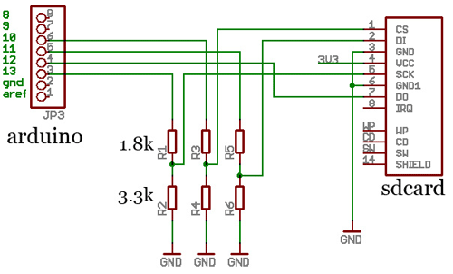
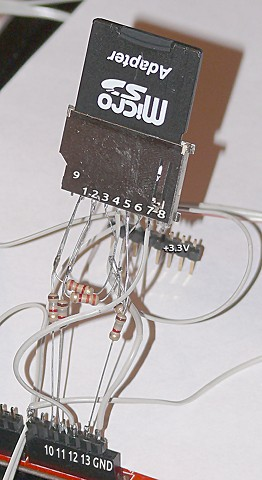

Приветствую! Подумал на днях, что для своего будущего 2х ядерного коптера (да и мало ли других проектов) неплохо бы потом сделать еще и черный ящик (GPS), а для этого надо много памяти и EEPROM не поможет, а поэтому стоит купить или сделать SD шилд для Arduino. Купить — дороговато для такой мелочи и долго ждать пока пришлют, поэтому гуглим и находим что народ то клепает свои шилды, для этого нам понадобится всего 6 резисторов, переходник/разъем для карты памяти и сама карточка (заработало с картами SD и SDHC, отформатированными в FAT16 и FAT32). Схемка довольно простая (читаем подробнее тут):

резисторы нужны для понижения напряжения с 5 до примерно 3.4 вольт спаял, получилось вот такая красота:

код взял из стандартых примеров Arduino, только немного подправил пины под вариант схемы (измененные места отмечены жирным, заодно перевел на русский местами):
/*
SD card read/write
Этот пример показывает как читать и писать данные на и из файла на SD карточке
Схема подключения
* SD карточка подсоеденина к SPI шине:
** MOSI - pin 11
** MISO - pin 12
** CLK - pin 13
** CS - pin 10
создано Ноябрь 2010
David A. Mellis
обновлено 2 Декабря 2010
Tom Igoe
и переведено в Марте 2011
Gleb Devyatkin
Этот пример кода - народное достояние.
*/
#include <SD.h>
File myFile;
void setup()
{
Serial.begin(9600);
Serial.print("Initializing SD card...");
// On the Ethernet Shield, CS is pin 4. It's set as an output by default.
// Note that even if it's not used as the CS pin, the hardware SS pin
// (10 on most Arduino boards, 53 on the Mega) must be left as an output
// or the SD library functions will not work.
pinMode(10, OUTPUT);
if (!SD.begin(10)) {
Serial.println("initialization failed!");
return;
}
Serial.println("initialization done.");
// открываем файл. заметте, что только один файл может быть открыт за раз,
// поэтому вы должны закрыть этот, чтобы открыть другой.
myFile = SD.open("test.txt", FILE_WRITE);
// если файл нормально открылся, запишем в него:
if (myFile) {
Serial.print("Writing to test.txt...");
myFile.println("testing 1, 2, 3.");
// закрываем файл:
myFile.close();
Serial.println("done.");
} else {
// а если он не открылся, то печатаем сообщение об ошибке:
Serial.println("error opening test.txt");
}
// откроем файл снова, для чтения:
myFile = SD.open("test.txt");
if (myFile) {
Serial.println("test.txt:");
// читаем из файла, пока не достигнем конца файла:
while (myFile.available()) {
Serial.write(myFile.read());
}
// закрываем файл:
myFile.close();
} else {
// а если не открылся, то пишем об ошибке:
Serial.println("error opening test.txt");
}
}
void loop()
{
// больше делать нечего, но тут мог бы быть ваш код
}
Поле отработки этого кода — на вашей карточке будет файлик TEST.TXT с содержимым «testing 1, 2, 3.» (или много раз эта строка, если код запускался не один раз, что немного странно, так как FILE_WRITE должен был перезаписать файл)